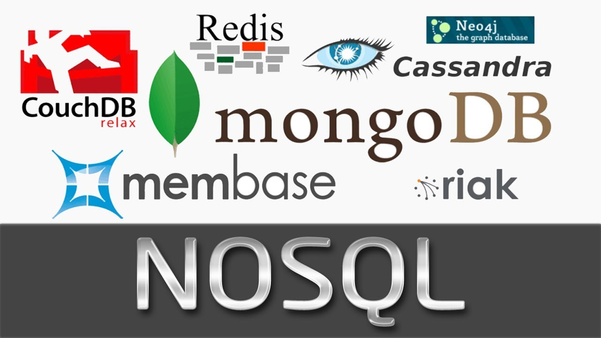
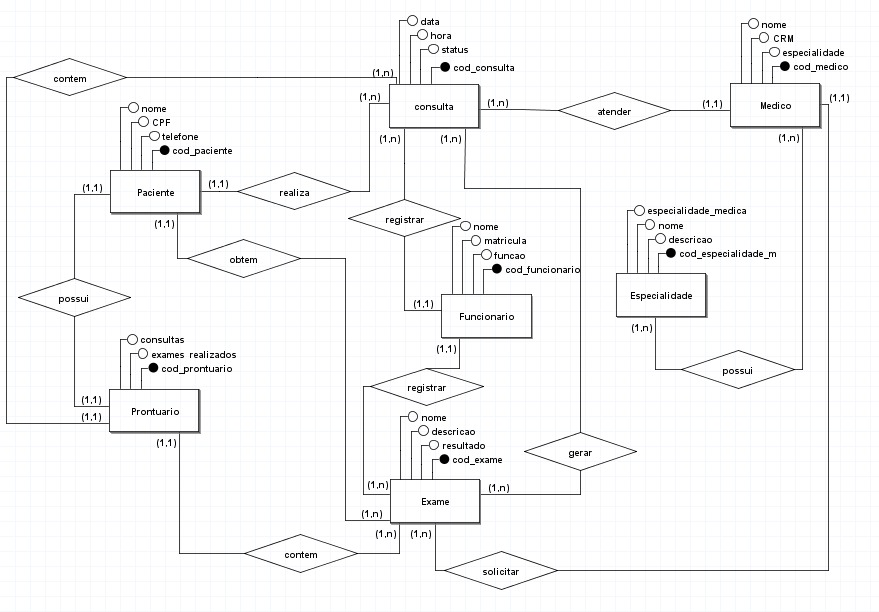
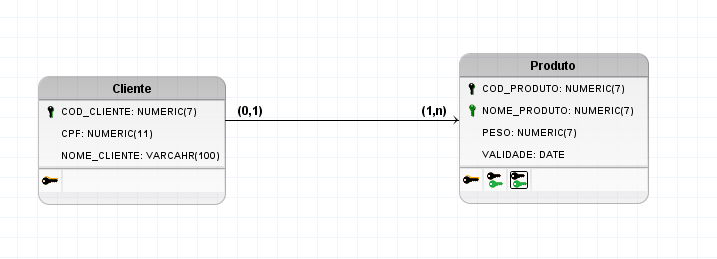
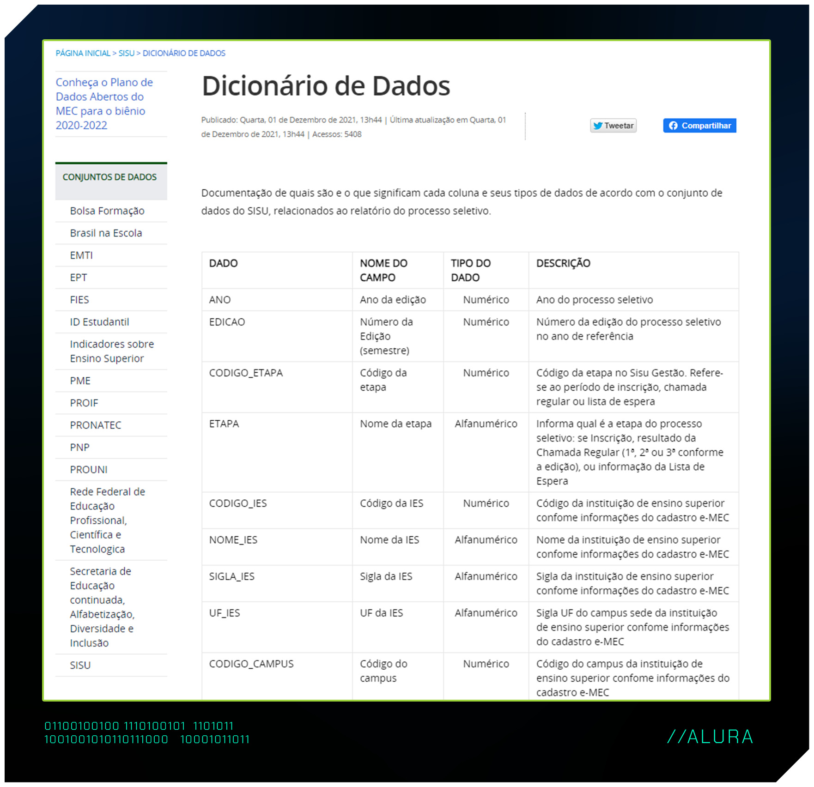

Banco de dados
O que é um Banco de Dados
Um banco de dados é uma coleção organizada de dados estruturados, armazenados e acessíveis eletronicamente. Ele permite o armazenamento e a recuperação eficiente de informações e é essencial para sistemas que manipulam grandes quantidades de dados.
Banco de Dados Relacional
Um banco de dados relacional organiza os dados em tabelas, permitindo relacionar diferentes conjuntos de dados através de chaves primárias e estrangeiras. Exemplos incluem MySQL, PostgreSQL e Oracle.
Banco de Dados Não Relacional
Bancos de dados não relacionais, também conhecidos como NoSQL, armazenam dados em formatos que não são tabelas. Eles são projetados para escalar horizontalmente e incluem tipos como documento (MongoDB), chave-valor (Redis), e grafo (Neo4j).
O que é um Diagrama Conceitual (DER)
O Diagrama Entidade-Relacionamento (DER) é um modelo visual usado para representar as entidades e relacionamentos dentro de um banco de dados. É uma etapa inicial para a organização lógica dos dados.
O que é um Diagrama Lógico (MER)
O Modelo Entidade-Relacionamento (MER) é uma evolução do DER e representa o diagrama lógico do banco de dados, detalhando as tabelas, colunas, chaves e tipos de dados específicos que serão usados.
Quais os Bancos de Dados que a Empresa Trabalha?
Atualmente, a empresa trabalha apenas com o banco de dados MySQL, sendo o mais adequado e recomendável para ser usando em sites.
O que é um Dicionário de Dados
O dicionário de dados é um recurso que documenta todas as estruturas e elementos de dados em um banco. Ele inclui descrições de tabelas, campos, tipos de dados e restrições, servindo como referência para desenvolvedores e administradores de banco de dados.
